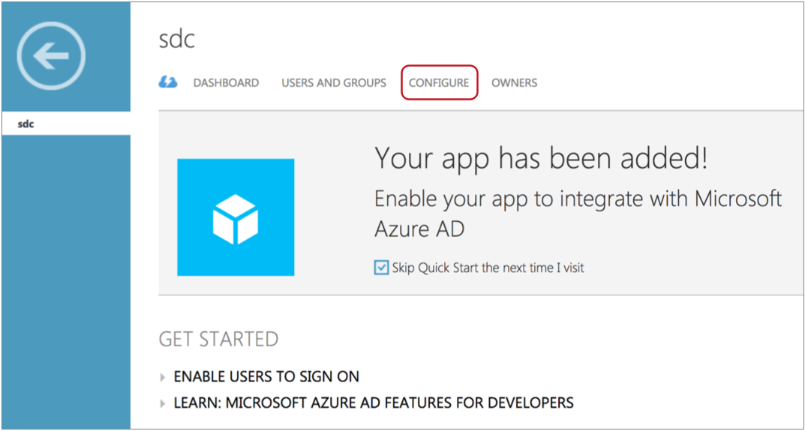
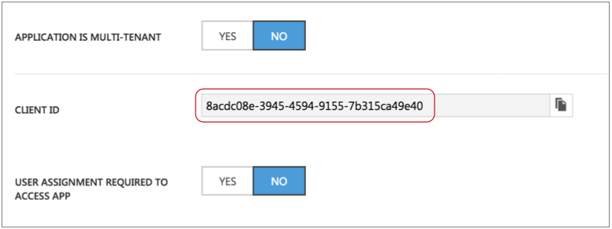
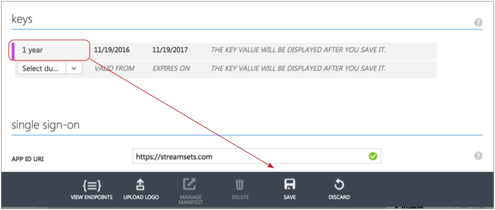

Azure Data Lake Store
The Azure Data Lake Store destination writes data to the Microsoft Azure Data Lake Store. You can use the Azure Data Lake Store destination in standalone and cluster batch pipelines at this time.
Before you use the destination, you must perform some prerequisite tasks.
When you configure the Azure Data Lake Store destination, you specify connection information such as the Client ID and fully qualified domain name (FQDN) for the account.
You can define a directory template and time basis to determine the output directories that the destination creates and the files where records are written. You can also define a file prefix and suffix, the data time zone, and properties that define when the destination closes a file.
Alternatively, you can write records to the specified directory, use the defined Avro schema, and roll files based on record header attributes. For more information, see Record Header Attributes for Record-Based Writes.
Prerequisites
- In Active Directory, create a Data Collector web application.
- Retrieve information from Azure to configure the destination.
- Grant execute permission to the Data Collector web application.
At the time of writing, Microsoft Azure Data Lake Store is still in Beta, so the information here is subject to change.
If the steps below are no longer accurate, you might try the following article or check for updates to the Microsoft Azure Data Lake Store documentation: https://docs.microsoft.com/en-us/azure/data-lake-store/data-lake-store-authenticate-using-active-directory.
After you complete all of the prerequisite tasks, you can configure the Azure Data Lake Store destination.
Step 1. Create a Data Collector Web Application
To allow Data Collector to write to Microsoft Azure Data Lake Store, add a Data Collector web application to Azure Active Directory.
- Log in to the classic Azure portal: https://manage.windowsazure.com.
Web applications are not yet available in the new Azure portal.
- In the Navigation panel, scroll down and click Active Directory, and then select the Active Directory account to use.
- To create an application, in the menu, select
Applications. Then, at the bottom of the window,
click Add.

This launches the Add Application wizard.
- On the What do you want to do? page, select Add an application my organization is developing.
- On the Tell us about your application page, perform the
following steps:
- Enter an application name, such as "sdc".
- Verify that the Web Application and/or Web API option is selected.
- To continue to the next page, click the Next arrow.
- In the App properties page, set Sign-On
URL to a URL that describes the application, and set
App ID URI to a URLs that identifies the application.
Use any URL, such as http://streamsets.com.
- Click the Complete check mark icon.
Active Directory creates the wizard and displays a welcome screen.
Step 2. Retrieve Information from Azure
- Client ID
- Client Key
- Auth Token Endpoint
- Account FQDN
To retrieve this information, you will access both the classic and new Azure portals. At the time of writing, several properties are available only in the classic portal.
- Retrieve the Client ID, Client Key, and Auth Token Endpoint from the classic Azure portal
-
- If continuing directly from creating the web application, click
Configure.

If starting fresh, log in to the classic Azure portal: https://manage.windowsazure.com. In the navigation panel, select Active Directory.
Select the account to use, then Applications. Then, select the Data Collector web application.
The Properties page appears.
- Scroll down the page and note the Client
ID:

Important: When you configure the Azure Data Lake Store destination, use this number for the Client ID property. - To retrieve the Client Key, continue to scroll down to
the Keys section. If you already have a key
generated, copy the key.
Otherwise, to generate a key, select a duration for the key, and then click Save:

The Azure portal saves your changes and generates a key. Copy the key value.
 Important: When you configure the Azure Data Lake Store destination, use this key for the Client Key property.
Important: When you configure the Azure Data Lake Store destination, use this key for the Client Key property. - At the bottom of the Properties page, click the
View Endpoints icon.

- In the App Endpoints window, locate
and copy the OAuth 2.0 Token Endpoint URL.
 Important: When you configure the Azure Data Lake Store destination, use this URL for the Auth Token Endpoint property.
Important: When you configure the Azure Data Lake Store destination, use this URL for the Auth Token Endpoint property. - Click the Check icon to close the window.
- If continuing directly from creating the web application, click
Configure.
- Retrieve the Account FDQN from the new Azure portal
-
- Log in to the new Azure portal: https://portal.azure.com/.
- From the All Resources list, select the Data Lake Store resource to use.
- In the Essentials page, note the
URL:
 Important: When you configure the Azure Data Lake Store destination, use this URL for the Account FQDN property.
Important: When you configure the Azure Data Lake Store destination, use this URL for the Account FQDN property.
Step 3. Grant Execute Permission
To allow the Azure Data Lake Store destination to write to Microsoft Azure Data Lake Store, grant execute permission to the Data Collector web application for the folders that you want to use. When using directory templates in the destination, be sure to include all subfolders.
- If continuing directly from retrieving details from Azure, in the navigation
panel, click Data Explorer.
Otherwise, log in to the new Azure portal: https://portal.azure.com/. From the All Resources list, select the Data Lake Store resource to use, then click Data Explorer.

- If necessary, click Create Folder and create the folders that you want to use.
- To grant write access to a folder, select the folder, and then click
Access.

The Access panel displays any existing permissions.
- To add the Data Collector web application as a user, in the Access panel, click Add.
- In the Assign Permissions panel, select Select User or Group.
- In the Select User or Group panel, scroll and select the
Data
Collector web application that you created, and click
Select.

- In the Select Permissions panel, configure the following
properties:
- For Permissions, select Execute to allow Data Collector to write to the folder.
- For Add to, select This folder and all children.
- For Add as, you can use the default, An access permission entry.
Click Ok to save your changes.
The Data Collector web application displays in the Assigned Permissions section of the Access panel.

Now that all prerequisite tasks are complete, you can configure the Azure Data Lake Store destination.
Directory Templates
By default, the Azure Data Lake Store destination uses directory templates to create output directories. The destination writes records to the directories based on the configured time basis.
You can alternatively write records to directories based on the targetDirectory record header attribute. Using the targetDirectory attribute disables the ability to define directory templates.
When you define a directory template, you can use a mix of constants, field values, and datetime variables. You can use the every function to create new directories at regular intervals based on hours, minutes, or seconds, starting on the hour. You can also use the record:valueOrDefault function to use field values or a default in the directory template.
/outputfiles/${record:valueOrDefault("/State", "unknown")}/${YY()}-${MM()}-${DD()}-${hh()}
- Constants
- You can use any constant, such as "output".
- Datetime Variables
- You can use datetime variables, such as ${YYYY()} or ${DD()}. The destination creates directories as needed, based on the smallest datetime variable that you use. For example, if the smallest variable is hours, then the directories are created for every hour of the day that receives output records.
- When you use datetime variables in an expression, use all of the datetime variables between one of the year variables and the smallest variable that you want to use. For example, to create directories on a daily basis for a Hadoop FS destination, use a year variable, a month variable, and then a day variable. You might use one of the following datetime variable progressions:
-
${YYYY()}-${MM()}-${DD()} ${YY()}_${MM()}_${DD()} - For details about datetime variables, see Datetime Variables.
- every function
- You can use the every function in a directory template to create directories at regular intervals based on hours, minutes, or seconds, beginning on the hour. The intervals should be a submultiple or integer factor of 60. For example, you can create directories every 15 minutes or 30 seconds.
- Use the every function to replace the smallest datetime variable used in the template.
- For example, the following directory template creates directories
every 5 minutes, starting on the
hour:
/HDFS_output/${YYYY()}-${MM()}-${DD()}-${hh()}-${every(5,mm())} - For details about the every function, see Miscellaneous Functions.
- record:valueOrDefault function
- You can use the following expression to use the value of a field
and the specified default value if the field does not exist or
if the field is null:
${record:valueOrDefault(<field path>, <default value>)} - For example, the following directory template creates a directory
based on the product field every day, and if the product field
is empty or null, uses Misc in the directory path:
/${record:valueOrDefault("/Product", "Misc")}/${YY()}-${MM()}-${DD()} - This template might create the following
paths:
/Shirts/2015-07-31 /Misc/2015-07-31
Time Basis
When using directory templates, the time basis helps determine when directories are created. It also determines the directory that the destination uses when writing a record, and whether a record is late.
- Processing Time
- When you use processing time as the time basis, the destination creates directories based on the processing time and the directory template, and writes records to the directories based on when they are processed.
- For example, say a directory template creates directories every minute and the time basis is the time of processing. Then, directories are created for every minute that the destination writes output records. And the output records are written to the directory for that minute of processing.
- To use the processing time as the time basis, use the following expression: ${time:now()}. This is the default time basis.
- Record Time
- When you use the time associated with a record as the time basis, you specify a Date field in the record. The destination creates directories based on the datetimes associated with the records and writes the records to the appropriate directories.
- For example, say a directory template creates directories every hour and the time basis is based on the record. Then, directories are created for every hour associated with output records and the destination writes the records to the related output directory.
- To use a time associated with the record, use an expression that calls a field and resolves to a datetime value, such as ${record:value("/Timestamp")}.
Data Formats
- Avro
- The destination writes records based on the Avro schema. You can use one of the following methods to specify the location of the Avro schema definition:
-
- In Pipeline Configuration - Use the schema that you provide in the stage configuration.
- In Record Header - Use the schema included in the avroSchema record header attribute.
- Confluent Schema Registry -
Retrieve the schema from Confluent Schema Registry.
The Confluent Schema Registry is a distributed
storage layer for Avro schemas. You can configure
the destination to look up the schema in the
Confluent Schema Registry by the schema ID or
subject.
If using the Avro schema in the stage or in the record header attribute, you can optionally configure the destination to register the Avro schema with the Confluent Schema Registry.
- The destination includes the schema definition in each file.
- You can compress data with an Avro-supported compression codec. When using Avro compression, avoid using other compression available in the destination.
- Binary
- The destination writes binary data from a single field in the record.
- Delimited
- The destination writes records as delimited data. When you use this data format, the root field must be list or list-map.
- JSON
- The destination writes records as JSON data. You can use one of
the following formats:
- Array - Each file includes a single array. In the array, each element is a JSON representation of each record.
- Multiple objects - Each file includes multiple JSON objects. Each object is a JSON representation of a record.
- Protobuf
- Writes a batch of messages in each file.
- Uses the user-defined message type and the definition of the message type in the descriptor file to generate the messages in the file.
- For information about generating the descriptor file, see Protobuf Data Format Prerequisites.
- Text
- The destination writes data from a single text field to the destination system. When you configure the stage, you select the field to use. When necessary, merge record data into the field earlier in the pipeline.
- You can configure the characters to use as record separators. By default, the destination uses a Unix-style line ending (\n) to separate records.
- When a record contains no data in the text field, you can configure the destination to write the record separator characters, creating an empty line. By default, the destination discards the record.
- Whole File
- Streams whole files to the destination system. The destination writes the data to the file and location defined in the stage. If a file of the same name already exists, you can configure the destination to overwrite the existing file or send the current file to error.
- By default, written files use the default access permissions for the destination system. You can specify an expression that defines access permissions.
- For more information about the whole file data format, see Whole File Data Format.
Configuring an Azure Data Lake Store Destination
Configure an Azure Data Lake Store destination to write data to Microsoft Azure Data Lake Store. Be sure to complete the necessary prerequisites before you configure the destination.
-
In the Properties panel, on the General tab, configure the
following properties:
General Property Description Name Stage name. Description Optional description. Required Fields 
Fields that must include data to be passed into the stage. Tip: You might include fields that the stage uses.Preconditions Conditions that must evaluate to TRUE to allow a record to enter the stage for processing. Click Add to create additional preconditions. On Record Error Error record handling for the stage: - Discard - Discards the record.
- Send to Error - Sends the record to the pipeline for error handling.
- Stop Pipeline - Stops the pipeline.
-
On the Output Files tab, configure the following
properties:
Output Files Property Description File Prefix Prefix to use for output files. Use when writing to a directory that receives files from other sources. Uses the prefix sdc-${sdc:id()} by default. The prefix evaluates to sdc-<Data Collector ID>.
The Data Collector ID is stored in the following file: $SDC_DATA/sdc.id. For more information about environment variables, see Data Collector Environment Configuration.
File Suffix Suffix to use for output files, such as txt or json. When used, the destination adds a period and the configured suffix as follows: <filename>.<suffix>. You can include periods within the suffix, but do not start the suffix with a period. Forward slashes are not allowed.
Not available for the whole file data format.
Directory in Header
Indicates that the target directory is defined in record headers. Use only when the targetDirectory header attribute is defined for all records. Directory Template 
Template for creating output directories. You can use constants, field values, and datetime variables. Output directories are created based on the smallest datetime variable in the template.
Data Time Zone Time zone for the destination system. Used to resolve datetimes in the directory template and evaluate where records are written. Time Basis Time basis to use for creating output directories and writing records to the directories. Use one of the following expressions: - ${time:now()} - Uses the processing time as the time basis.
- ${record:value(<date field path>)} - Uses the time associated with the record as the time basis.
Max Records in a File Maximum number of records to be written to an output file. Additional records are written to a new file. Use 0 to opt out of this property.
Not available when using the whole file data format.
Use Roll Attribute
Checks the record header for the roll header attribute and closes the current file when the roll attribute exists. Can be used with Max Records in a File and Max File Size to close files.
Roll Attribute Name Name of the roll header attribute. Default is roll.
Validate Directory Permissions When you start the pipeline, the destination tries writing to the configured directory template to validate permissions. The pipeline does not start if validation fails. Note: Do not use this option when the directory template uses expressions to represent the entire directory. -
On the Data Format tab, configure the following
property:
Data Format Property Description Data Format
Format of data to be written. Use one of the following options: - Avro
- Binary
- Delimited
- JSON
- Protobuf
- Text
- Whole File
-
For Avro data, on the Data Format tab, configure the
following properties:
Avro Property Description Avro Schema Location Location of the Avro schema definition to use when writing data: - In Pipeline Configuration - Use the schema that you provide in the stage configuration.
- In Record Header - Use the schema in the avroSchema
record header attribute. Use only when the
avroSchema attribute is defined for all records.
- Confluent Schema Registry - Retrieve the schema from the Confluent Schema Registry.
The destination includes the schema definition in each generated file.
Avro Schema Avro schema definition used to write the data. You can optionally use the runtime:loadResource function to use a schema definition stored in a runtime resource file.
Register Schema Select to register a new Avro schema with the Confluent Schema Registry. Schema Registry URLs Confluent Schema Registry URLs used to look up the schema or to register a new schema. To add a URL, click Add. Use the following format to enter the URL: http://<host name>:<port number>
Look Up Schema By Method used to look up the schema in the Confluent Schema Registry: - Subject - Look up the specified Avro schema subject.
- Schema ID - Look up the specified Avro schema ID.
Schema Subject Avro schema subject to look up or to register in the Confluent Schema Registry. If the specified subject to look up has multiple schema versions, the origin uses the latest schema version for that subject. To use an older version, find the corresponding schema ID, and then set the Look Up Schema By property to Schema ID.
Schema ID Avro schema ID to look up in the Confluent Schema Registry. Avro Compression Codec The Avro compression type to use. When using Avro compression, do not enable other compression available in the destination.
-
For whole files, on the Data Format tab, configure the
following properties:
Whole File Property Description File Name Expression Expression to use for the file names.
For tips on how to name files based on input file names, see Writing Whole Files.
Permissions Expression Expression that defines the access permissions for output files. Expressions should evaluate to a symbolic or numeric/octal representation of the permissions you want to use. By default, with no specified expression, files use the default permissions of the destination system.
To use the original source file access permissions, use the following expression:${record:value('/fileInfo/permissions')}File Exists Action to take when a file of the same name already exists in the output directory. Use one of the following options: - Send to Error - Handles the record based on stage error record handling.
- Overwrite - Overwrites the existing file.